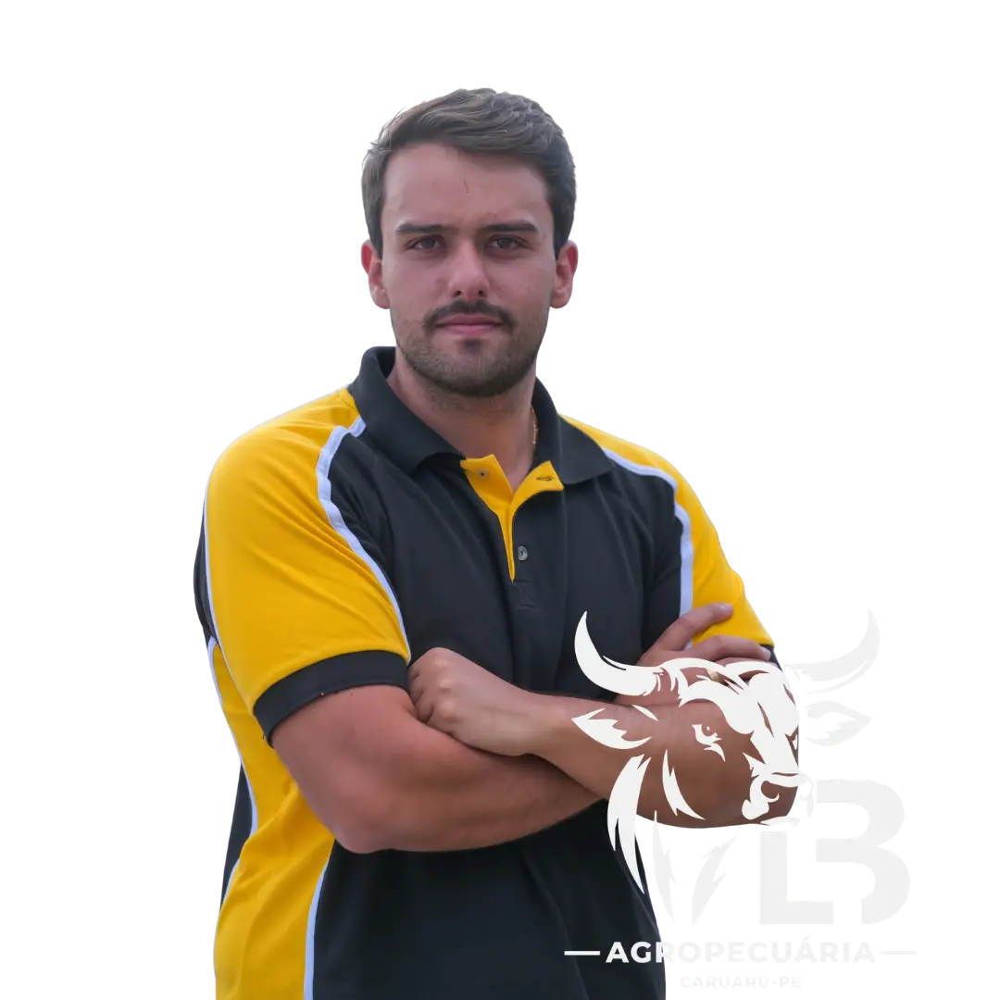

01
ERRO GRAVE
Compra e Viabilidade Cegas
Comprar bezerro ou boi magro no escuro. Pagar caro na arroba de entrada sem simular o ponto de equilíbrio, iniciando a operação no prejuízo antes do gado pisar no curral.
Se você toma decisões no confinamento baseadas em "achismo", está deixando dinheiro na mesa a cada trato. Veja os 4 pontos críticos onde o lucro costuma escapar:
Comprar bezerro ou boi magro no escuro. Pagar caro na arroba de entrada sem simular o ponto de equilíbrio, iniciando a operação no prejuízo antes do gado pisar no curral.
Jogar os animais no cocho sem protocolo rigoroso de transição. Animais acidóticos perdem peso nos primeiros 15 dias, estragando a conversão alimentar do ciclo inteiro.
Não pesar os animais no meio do ciclo e não conferir o Ganho Médio Diário. Quando descobre que o lote não está convertendo, o gado já consumiu a ração e o prejuízo está consolidado.
Errar o momento exato de abate e não entender como a carcaça vai render no gancho. Peso de balança na fazenda não paga conta: o que fecha a margem é o rendimento no frigorífico.
A Mentoria LB organiza as decisões reais do confinamento — da compra do lote à pesagem de gancho — com a vivência de quem cuida dos animais, formula a ração e fecha a conta todos os dias na Agropecuária LB.
Espaço de curral por cabeça, dimensionamento de cocho e qualidade da água para desempenho pleno.
Como garimpar lotes, escolher machos e novilhas, testar prenhez e comprar barato para garantir o lucro na entrada.
Recepção sem estresse pós-transporte, vacinação, vermifugação e identificação com pesagem de conferência.
O método comprovado para tirar o capim sem provocar acidose, usando milho moído, farelos e núcleo de precisão.
Controle diário de consumo de ração por cabeça, acompanhamento de pesagens e cálculo do custo da arroba produzida.
Negociação de mercado, momento ideal de abate e garantia do rendimento de carcaça (54.5%) na balança do gancho.
Esqueça softwares complexos que exigem equipe de TI. Você recebe as 3 planilhas oficiais da Mentoria LB, exatamente como são preenchidas no dia a dia da fazenda:
Esqueça fórmulas mágicas e discursos de escritório que não sobrevivem a uma semana de seca no curral.

Eu sou Lucas Borba, agropecuarista e fundador da Agropecuária LB em Pernambuco.
Comecei na pecuária muito jovem com uma única vaca dada pelos meus pais. Sofria com o pasto seco no verão e com animais perdendo peso na seca. Quando montei meu primeiro confinamento, errei bastante: dietas desajustadas, compra errada e descontrole de custos.
Foi testando no campo, pesando lote após lote e acompanhando o abate no frigorífico que desenvolvi o Método LB de Confinamento — um modelo intensivo 100% fechado, com dieta sem volumoso, ganho médio acima de 1.7 kg/dia e controle financeiro rígido.
"Aqui não tem conversa de vendedor. Eu vivo da arroba do boi no gancho e vou te ensinar exatamente o que faço na minha fazenda."
O arsenal completo para você estruturar o confinamento da sua propriedade com segurança:
Divididas em 11 módulos lógicos, gravadas dentro do confinamento, acompanhando do embarque da compra ao frigorífico.
Planilha de Viabilidade Lucrativa, Base de Controle de Pesagem (GMD) e Planilha de Rendimento de Carcaça No Gancho.
Momentos de mentoria em grupo de 1 hora com Lucas Borba para analisar o seu lote, tirar dúvidas e ajustar a dieta.
Networking direto com outros confinadores e suporte contínuo para você não tomar decisões sozinho.
Assista no seu tempo, quantas vezes precisar, pelo computador ou celular (app Hotmart) com todas as atualizações inclusas.
Confinamento na Prática com Lucas Borba
ou R$ 697,00 à vista
Garantia Incondicional de 7 Dias:
Assista às aulas e teste as planilhas. Se não aprovar o método, basta um clique na Hotmart para receber 100% do seu dinheiro de volta.
Respostas diretas para as dúvidas mais comuns dos produtores antes de entrar na Mentoria.
Sim. O método foi desenhado tanto para quem quer confinar 20 ou 30 cabeças quanto para quem lida com lotes de centenas de bois. Confinar com método em pequena escala é ainda mais importante, pois cada erro de compra ou dieta pesa muito mais no bolso.
Com certeza. Lucas ensina desde o preparo manual eficiente até o uso de misturadores. O foco do método é a formulação nutricional correta, a escolha dos insumos (milho, farelos e núcleo) e os horários de trato, sem exigir investimentos milionários em infraestrutura.
A dieta sem volumoso exige critério e acompanhamento. Na Mentoria LB, Lucas explica as etapas de adaptação, o ajuste da dieta e a observação dos animais para reduzir os riscos de acidose e timpanismo. A aplicação deve considerar a condição de cada lote e a orientação técnica responsável.
Sim. As planilhas em Excel foram gravadas e explicadas em aulas dedicadas (módulos 02 e 03). Elas são pré-configuradas e fáceis de preencher no computador ou no celular: você só digita o peso dos animais e o preço da ração, e a planilha calcula o lucro e o GMD automaticamente.
Os encontros ocorrem semanalmente pelo Google Meet com 1 hora de duração. É o momento de tirar dúvidas da sua boiada, mostrar fotos ou pesagens do seu lote e receber a orientação direta de Lucas Borba para o seu caso específico.